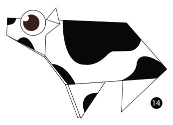

Origami designs
About us
Follow us
1.Cow

Interesting characteristics of a cow
- Cow is a domestic animal and considered sacred in India
- Cows are our main suppliers of milk from which many dairy products like curd, butter, cheese is derived
1.Flying squirrel

Interesting characteristics of the flying squirrel
- Although they are known as 'fluing squirrels' they do not actually fly - they glide through the air
- These squirrels are nocturnal. They can collect up to 15000 nuts per season
- They reside in holes made in trees by the woodpecker